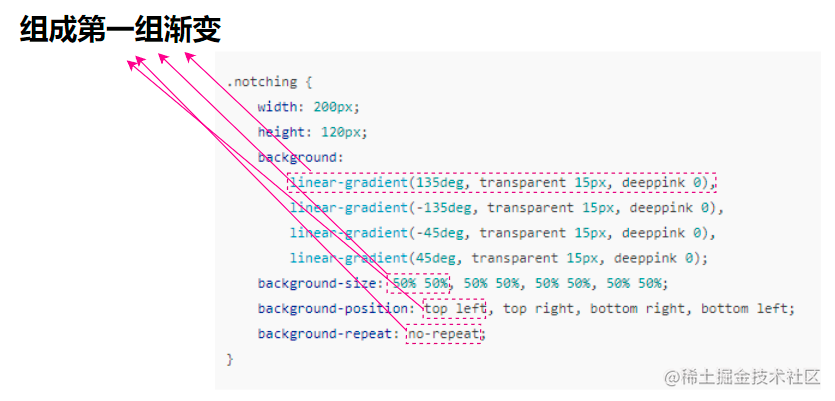
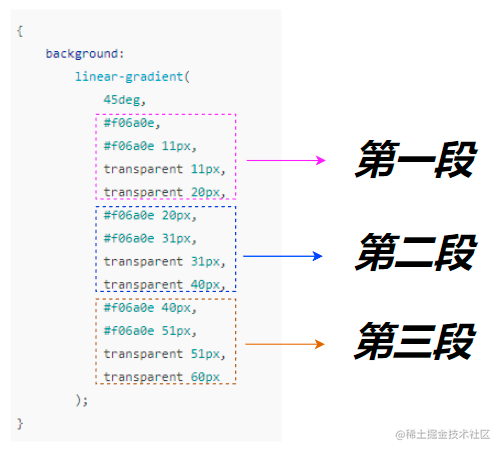

linear-gradient() CSS 函数创建一个由两种或多种颜色沿一条直线进行线性过渡的图像，其结果是 gradient 数据类型的对象，此对象是一种特殊的 image 数据类型
渐变线的方向的角度。0deg 等价于 to top，增加值相当于顺时针旋转。
第二、第三、第四组同理。当一些属性完全相同的时候，可以省略使用简写，譬如 `background-size: 50% 50%, 50% 50%, 50% 50%, 50% 50%`，由于每一组的 `background-size` 的值都是 `50% 50%`，所以可以简写成 `background-size: 50% 50%`。
四个背景分别放置在四个方向上，大小正好是四分之一
每一段都是起始点和终点
遇到此类问题的解决方案是：**在衔接处，适当留出一些渐变空间**。我们简单改造一下上述代码：
CSS中的`background-image`和`background-color`属性都是用来设置元素背景的，但它们之间有一些关键的区别： 1. **用途**： - `background-image`：用来设置元素的背景图像。你可以指定一个图像的URL，将其作为元素的背景。 - `background-color`：用来设置元素的背景颜色。你可以指定一个颜色值，如十六进制颜色代码、RGB、RGBA等。 2. **叠加方式**： - 当你同时使用`background-image`和`background-color`时，背景图像会覆盖在背景颜色之上。如果背景图像有透明度，背景颜色可能会透过图像显示出来。 3. **兼容性**： - `background-image`和`background-color`都有很好的浏览器兼容性，几乎所有的浏览器都支持这两个属性。 4. **性能**： - 使用`background-image`时，需要加载图像文件，这可能会对页面加载时间产生影响，尤其是在使用高分辨率图像或大量背景图像时。 - `background-color`通常对性能影响较小，因为它不需要加载外部资源。 5. **可访问性**： - 对于视觉障碍用户，使用`background-color`可能更容易理解，因为它们提供了一致的背景，有助于文本的可读性。 - 背景图像可能包含重要信息，也可能仅仅是装饰性的。确保背景图像的使用不会干扰内容的可访问性是很重要的。 6. **CSS3增强**： - CSS3为背景提供了更多的控制，如`background-size`、`background-repeat`、`background-position`等属性，可以更精细地控制背景图像的显示方式。 7. **使用场景**： - `background-image`通常用于需要视觉吸引力的元素，如横幅、特色区域等。 - `background-color`则更常用于提供简单的背景色，以增强页面的可读性和美观性。 下面是一个简单的CSS示例，展示了如何同时使用`background-image`和`background-color`： ```css .element { background-image: url('path/to/image.jpg'); background-color: #f0f0f0; /* 背景颜色 */ background-repeat: no-repeat; /* 图像不重复 */ background-position: center center; /* 图像居中显示 */ background-size: cover; /* 背景图像覆盖整个元素 */ } ``` 在这个示例中，`.element`将有一个背景图像和一个背景颜色，图像会覆盖在颜色之上，并且根据指定的属性进行显示。